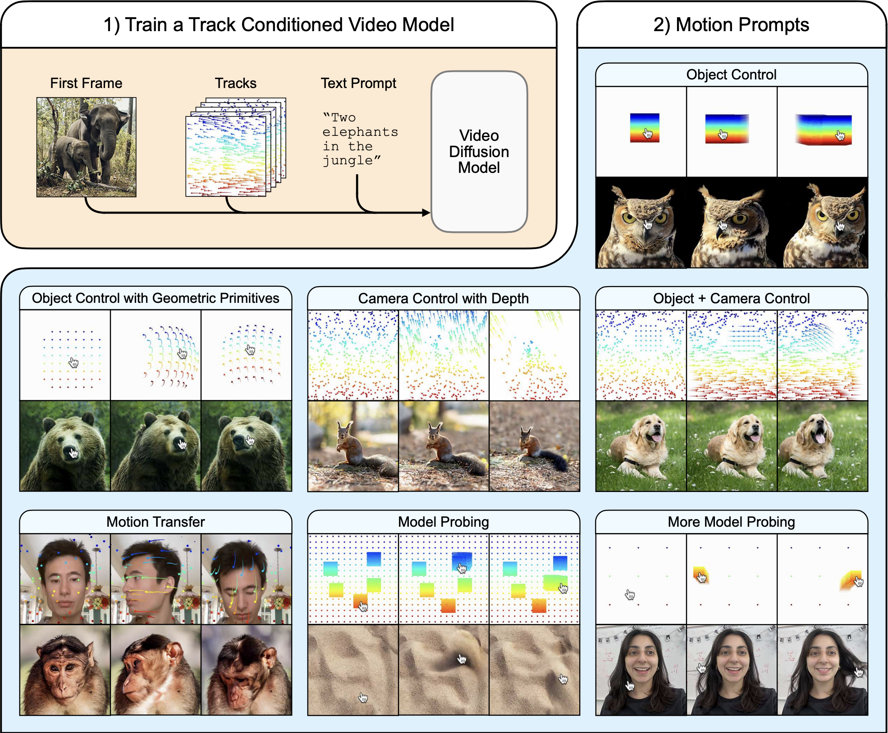
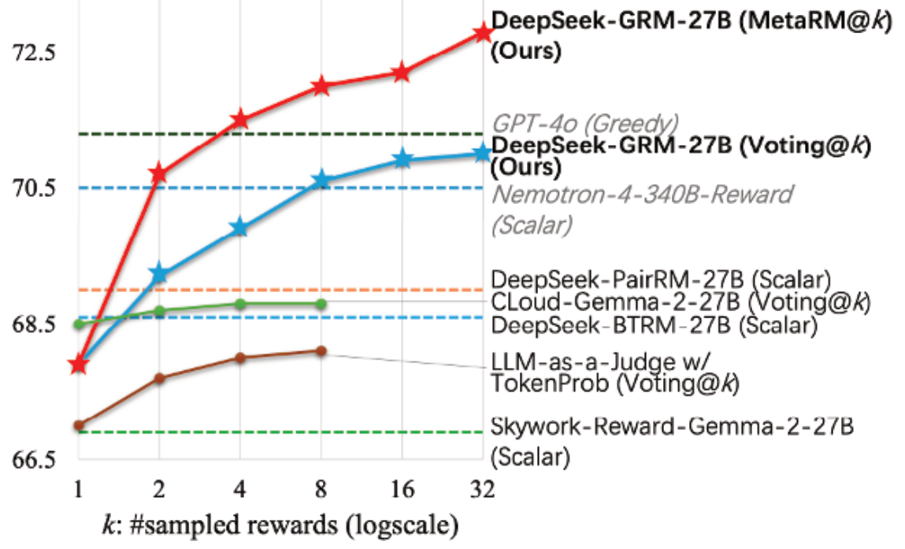
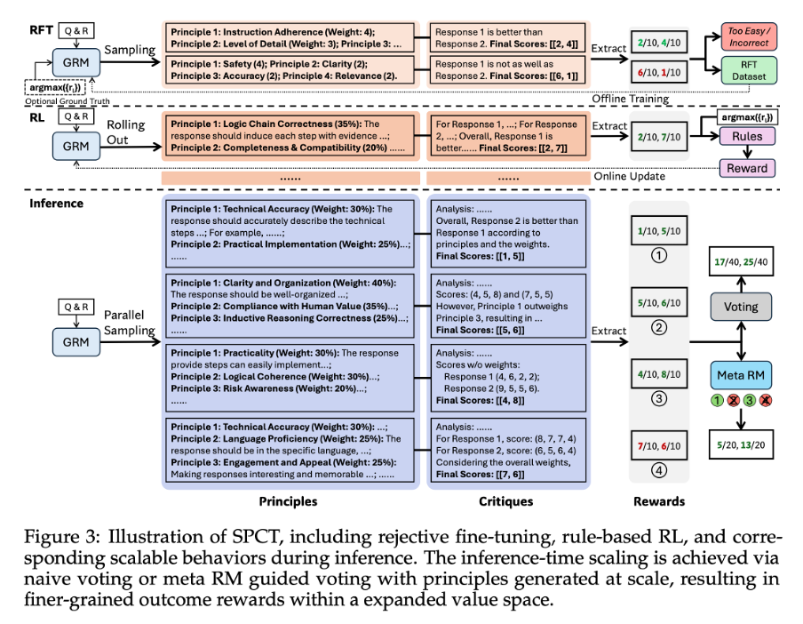
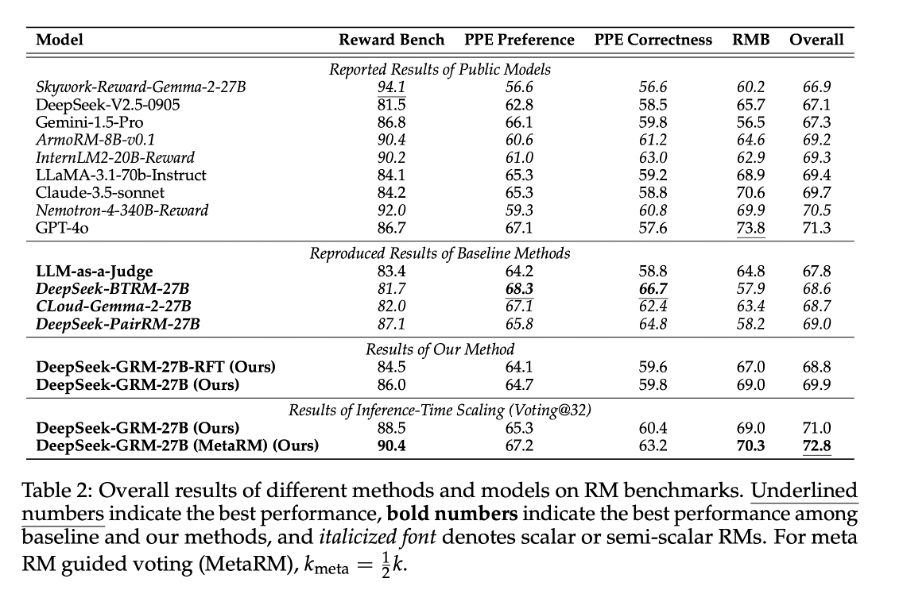
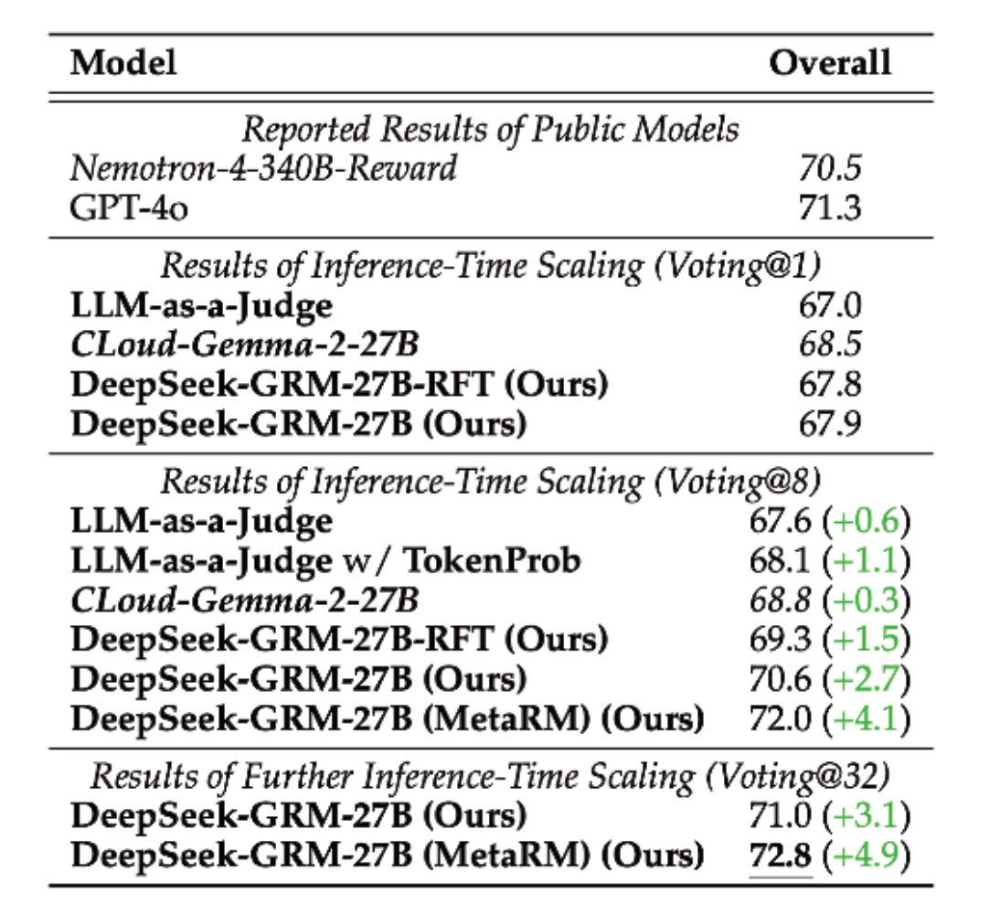
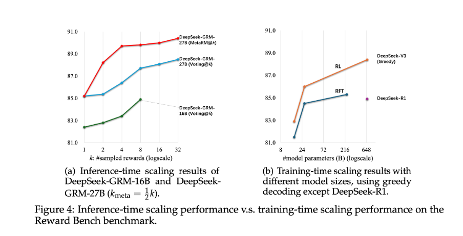
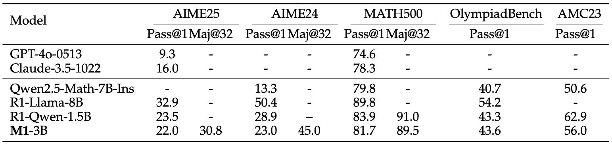
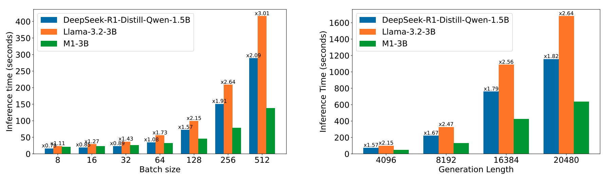
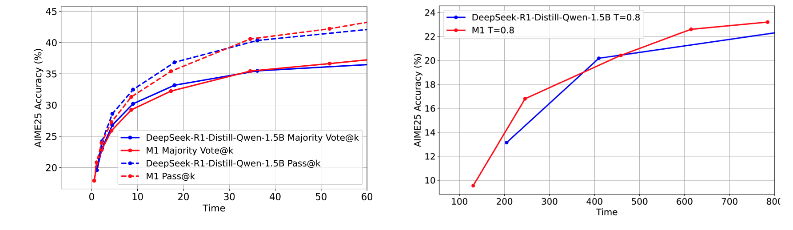

April Papers: Motion Prompting, Mamba Reasoning and Modeling Rewards
April has been a busy month for the AI research community, with ICLR (the first of the "big three" AI conferences of the year) taking place in Singapore. We're pleased to share summaries of a few of our favourite papers we've seen this month.
First up, Motion Prompting introduces flexible spatio-temporal trajectories, or "motion prompts", as a powerful new way to control nuanced dynamic actions and motion in video generation, overcoming the limitations of text prompts. This is followed by Inference-Time Scaling for Generalist Reward Modeling, which presents Self-Principled Critique Tuning (SPCT), a method that powers DeepSeek-GRM—a generalist reward model capable of generating adaptive, high-quality rewards and achieving strong performance gains through scalable inference-time compute. Finally, M1 looks at using a Mamba-based architecture to tackle reasoning problems, as a more computationally-efficient approach when compared to transformers with chains-of-thought.
We hope you enjoy this month's papers as much as we did! If you have thoughts or questions, please reach out to us at @GCResearchTeam.
Motion Prompting: Controlling Video Generation with Motion Trajectories
The key idea
The central concept of Motion Prompting is to gain fine-grained control over video generation by conditioning a video diffusion model on spatio-temporally sparse or dense motion trajectories. These trajectories, termed "motion prompts", are presented as a powerful complementary control scheme to text, which often struggles to convey the complex nuances of motion. The goal is to achieve more expressive and precise control over the generated video content by enabling users to specify desired movements directly.

Background
Significant progress has been made in generative models for images and videos using diffusion models. While text prompts can generate impressive visuals, they are limited in controlling specific spatial compositions in images or intricate motions in videos. To address spatial control, ControlNet was introduced. This architecture enhances pretrained text-to-image diffusion models by adding spatial conditioning. ControlNet works by keeping the original model's parameters locked and creating a trainable copy of its encoding layers, connected by "zero convolutions" - zero initialized layers such that the conditioning signal doesn't affect the diffusion process at the beginning of training. This design allows learning various spatial conditions while preserving the backbone's quality. In parallel, models like Lumiere advanced text-to-video generation by synthesising the entire temporal duration of a video in a single pass using a Space-Time U-Net architecture built on a pretrained text-to-image model. This contrasts with methods that rely on generating keyframes and using temporal super-resolution, which can struggle with global temporal consistency. Motion Prompting builds directly on these foundations, adapting the ControlNet approach to provide granular motion control within a video diffusion model framework like Lumiere.
Their method
The Motion Prompting approach trains a ControlNet adapter on top of a pretrained video diffusion model, specifically leveraging Lumiere. The conditioning signal is provided through motion trajectories, or point tracks, which encode the movement and visibility of points across time. This allows for flexible control over any number of points, applying to objects, the camera, or the entire scene, and supporting temporally sparse constraints. The motion prompts are encoded into a space-time volume and fed into a trainable copy of the base model's encoder, similar to the original ControlNet design, while the pretrained backbone remains fixed. The training procedure follows ControlNet principles and exhibits a "sudden convergence phenomenon" where the model quickly learns to follow the condition. To make specifying motion easier, they propose motion prompt expansion, which converts simple user inputs like mouse drags into more detailed motion tracks.
Results
The Motion Prompting framework demonstrates versatility through various applications enabled by this single trained model:
- Object and camera control.
- "Interacting" with an image using mouse drags to manipulate content like hair or sand.
- Motion transfer, applying motion from a source video to a different first frame.
- Drag-based image editing.
The approach also reveals emergent behaviors, such as realistic physics, suggesting its utility for probing the underlying video model's understanding of the world. Failures can be used to identify limitations in the model's learned representations and its grasp of physics. Quantitative evaluations were performed on the DAVIS dataset using various metrics. These tests measured how accurately the generated video matched the desired motion and assessed the overall visual quality and realism. The results showed that the Motion Prompting model generally outperformed baseline methods across these different measures.A human study using a two-alternative forced choice protocol also indicated that users preferred the results of Motion Prompting over baselines in terms of motion adherence, realistic motion quality, and visual quality. To see dynamic examples of these capabilities, readers are encouraged to explore the gallery of results on the paper's website: https://motion-prompting.github.io/.
Inference-Time Scaling for Generalist Reward Modeling
The key idea
Recent studies have highlighted the critical role of reward models (RMs) in post-training reinforcement learning (RL) in providing high-quality reward signals that help Large Language Models (LLMs) perform well in domains where correctness can be automatically verified, such as coding and mathematics.
However, generating reliable rewards becomes far more challenging in less structured or open-ended domains where answers cannot be automatically verified. At the same time, there is growing interest in making reward quality scale with available inference-time compute - improving as more sampling or computational resources are used.
This paper addresses both challenges by introducing Self-Principled Critique Tuning (SPCT), a novel learning method that enables Generalist Reward Models (GRMs) to generate adaptive, high-quality rewards and effectively leverage increased inference-time compute.
This approach is implemented in DeepSeek-GRM-27B, a Gemma-2-27B-based post-trained with SPCT and enhanced with a secondary Meta Reward Model (MetaRM) to further improve inference-time scaling performance, as shown in Figure 1.

Their method
The authors adopt a pointwise generative reward modeling paradigm. Pointwise scoring assigns individual rewards to each response, enabling flexibility across diverse input formats, while the generative approach produces textual judgements or critiques from which reward scores are derived.
To enhance performance, they apply sampling-based aggregation, generating multiple reward sets per query and combining them to produce a final score.
This setup lays the foundation for their core innovation — the Self-Principled Critique Tuning (SPCT) method, which further improves reward quality and scalability. As suggested from previous studies, the authors incorporate "principles" generated by the GRM to guide the RM and crucially they treat these not as a pre-processing step, but as part of the reward generation itself. The GRM generates principles based on the input query and answers, and then produces critiques and assigns rewards according to these generated principles. This adaptive approach allows the reward generation process to align with different inputs contexts and nuances.
As shown in Figure 3, SPCT begins with rejective fine-tuning to train the model on properly formatted principles and critiques, followed by rule-based online RL (via GRPO) to refine output quality and improve the model’s ability to distinguish between high- and low-quality responses.

To scale reward quality at inference time, the authors use sampling-based strategies: the model generates multiple reward samples per query, assigns pointwise scores, and aggregates them — typically by summing — to obtain a robust final reward. This approach leverages diverse judgments to approximate a consensus, reducing bias from any single sample. Finally, a Meta Reward Model (MetaRM) filters the sampled rewards, selecting only the highest-quality critiques for aggregation, further improving reliability and reducing bias.
Results - RM benchmarks
Table 2 show that the post-trained DeepSeek-GRM-27B outperforms the baseline methods (reimplemented by the authors) and matches or exceeds the performance of leading models like GPT-4o and Nemotron-4-340B-Reward.

Results - inference-time scalability
Table 3 and Figure 1 demonstrate that with inference-time scaling (using 32-sample voting) the model achieves the best overall performance, which improves further when combined with MetaRM-guided voting.

Results - scaling inference vs training costs
Figure 4 compares the benefits of inference-time scaling versus model size scaling. Remarkably, the 27B-parameter DeepSeek-GRM, when paired with 32-sample voting, reaches performance comparable to or better than much larger models, even the 671B MoE model.

Takeaways
This paper marks an important step toward building a true Generalist Reward Model (GRM), introducing the SPCT learning method to generate high-quality, adaptive rewards across diverse tasks. While the results are promising, the authors acknowledge that challenges remain, particularly in tasks with highly subjective reward criteria or those requiring external knowledge.
The paper also demonstrates the strong potential of inference-time scaling, showing that smarter use of compute can deliver major performance gains — a promising direction for future research on efficient, scalable reward systems.
M1: Towards Scalable Test-Time Compute with Mamba Reasoning Models
The key idea
Language models applied to reasoning have recently been shown to benefit from longer chain-of-thought sequences, which require the model to process a longer context. However, transformer-based models suffer from a quadratic increase in computational complexity with respect to context length. The authors tackle this problem using a novel hybrid reasoning model (M1) based on Mamba, which has been shown to be computationaly more efficient than transformers [Gu and Dao, COLM 2024]. In doing so, they give the first hybrid Mamba-based reasoning model whose performance on math reasoning tasks outperforms transformer-based reasoning models.
Their method
The authors adapt the multi-step approach proposed in [Wang et al., NeurIPS 2024] to design their 3B parameter M1 model: 1. Initialisation & Distillation. Beginning with the pre-trained Llama-3.2-3B model, they replace transformer attention heads with Mamba-based ones and initialise them with the corresponding transformer weights. See Figure 1 for the procedure. Then, they distil the hybrid model using the reverse KL divergence.

<figcaption><strong>Figure 1.</strong> An outline of the MambaInLlama initialisation procedure used in the M1 model, which is from [Wang et al., NeurIPS 2024].</figcaption>
-
Supervised Finetuning. They finetune the resulting model from step 1 in two ways. First, on the large set of math problems OpenMathInstruct-2. Then, on math problems and solutions generated by reasoning models, which includes OpenR1-Math-220k, OpenThoughts-114k-math, and ServiceNow-AI/R1-Distill.
-
Reinforcement Learning. They subsequently enhance performance using an altered Group Relative Policy Optimization (GRPO) strategy. In particular, they remove the KL term that penalises policies that are different to the original, and they add an entropy term to encourage diversity in the policy. The altered GPRO loss they use is
\[L_\text{GPRO}(\Theta) = \mathbb{E}\left[\frac{\pi_{\Theta}(a \mid s)}{\pi_{\Theta_\text{old}}(a \mid s)} \cdot \hat{A}(s, a)\right] + \eta \cdot H(\pi_\Theta).\]
Results
The authors evaluate the performance of their M1-3B model in terms of reasoning (Table 1), inference speed (Figure 2), and test-time scaling (Figure 3):
-
Reasoning. M1-3B outperforms all non-reasoning language models and the Qwen2.5-Math-7B-Instruct reasoning model in all benchmarks. It slightly underperforms against the DeepSeek-R1-Distill-Qwen-1.5B reasoning model in almost all benchmarks.

Table 1.Reasoning performance results. Pass@1 refers to a percentage mark using a single sample per question and Maj@32 refers to a majority vote on 32 samples per question. -
Inference Speed. As batch size and generation length are scaled up, M1-3B shows better speedups compared to other models of similar and even smaller size, with up to a 3x speed up when compared to the Llama-3.2-3B model, which M1-3B is based on.

Figure 2.Inference speed results when using prompt length 256 and decoding length 4096 (left) and when using batch size 128 (right). -
Test-Time Scaling. Given a fixed compute-time budget, M1-3B ultimately outperforms DeepSeek-R1-Distill-Qwen-1.5B on math reasoning tasks when allowed to scale either the number of scoring samples or the length of the context/chain-of-thought.

Figure 3.Results for test-time scaling with a fixed compute time budget (x-axis) when allowed to vary number of samples (left) and length of context (right).
Takeaways
The M1-3B model shows that transformers are not the only good option for reasoning models. This hybrid model built on Mamba obtains improved computational efficiency and performance over even the larger Qwen2.5-Math-7B-Instruct reasoning model. However, for the smaller DeepSeek-R1-Distill-Qwen-1.5B model, it is only able to gain an improved reasoning performance by taking advantage of the more efficient inference time, that is, allowing for 'more reasoning' in a fixed amount of time.
...